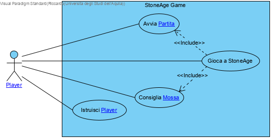

|
|
|
Use Case Diagram - StoneAge Use Case Diagram
 link
link
| Jump to: |
|  |
| Model Elements |
| Name | Description | ||
|
|
|||
|
|
|||
|
|
Caso
d'uso "Gioca a Stone Age"
FORMATO DETTAGLIATO:
Portata:
StoneAge Game
Livello:
Obiettivo Utente
Parti
Interessate e Interessi:
-
Player:
vuole giocare la partita
comprendendo in ogni momento cosa accade, quali elementi del gioco
possiede e quali azioni può eseguire.
Post-condizioni:
Viene giocata una partita
tra giocatori
Scenario
principale di successo (o Flusso di base):
1.
Esegui Caso D'uso Avvia Partita
2.
loop
2.1. for
each giocatore
2.1.1.
SYSTEM mostra al giocatore
che è il suo turno
2.1.2.
SYSTEM controlla se ci sono delle regole da applicare per il giocatore
ad inizio turno.
(es: deve saltare il turno)
2.1.3. if giocatore
è umano
2.1.3.1.
Il giocatore
sceglie(clicca) un token
forest tra quelli coperti
2.1.4.
else
2.1.4.1.
SYSTEM sceglie un token
forest tra quelli coperti
end
if
2.1.5.
SYSTEM mostra al giocatore
il valore del token
forest
2.1.6.
SYSTEM sposta il marker
del giocatore
emulato secondo l'indicazione del token
forest (vedi regola R1 nelle specifiche supplementari)
2.1.7.
SYSTEM controlla se ci sono delle regole da applicare per il giocatore
2.1.8.
SYSTEM esegue l'azione associata alla casella
secondo la regola R2 (presente nelle specifiche supplementari)
2.1.9.
SYSTEM controlla se ci sono delle regole da applicare per il giocatore
a fine turno.
2.1.10.
SYSTEM controlla se il giocatore
emulato ha costruito il numero di capanne necessarie per la vittoria
(vedi regola R4 nelle specifiche supplementari)
end
for each
until
un giocatore
costruisce il numero giusto di capanne per la vittoria
3.SYSTEM
mostra la vittoria del giocatore vincitore
4.SYSTEM
mostra la possibilità di avviare una nuova partita
Estensioni (o flussi alternativi):
2.1.3.a.Il
giocatore
ha il turno
bloccato
2.1.3.a.1.
SYSTEM comunica al giocatore
che ha il turno
bloccato
2.1.3.a.2.
Il giocatore
conferma la ricezione del blocco
2.1.3.a.3. jump to 1.
Esegui Caso D'uso AvviaPartita
#.a.In
qualsiasi momento, il giocatore
chiede di essere consigliato sulla prossima mossa:
#.a.1.
Il giocatore
richiede un tip
#.a.2.
SYSTEM esegue il caso d’uso “Consiglia mossa”
#.a.3.
SYSTEM torna al gioco
#.b.
In qualsiasi momento, il giocatore
chiede di iniziare una nuova partita
#.b.1.
Il giocatore
richiede nuova partita
#.b.2. jump
to 1. Esegui Caso D'uso AvviaParita |
||
|
|
Un giocatore
vuole conoscere le regole del gioco prima di iniziare a giocare. Per
questo richiede al sistema un tutorial. Il sistema richiede al giocatore
di scegliere la modalità
di gioco per cui vuole essere istruito. Una volta che il giocatore
ha effettuato la scelta della modalità
di gioco, il sistema mostra al giocatore
le regole del gioco attraverso un tutorial. Al termine del tour il giocatore
può scegliere di giocare o ripeterlo. |
||
|
|
Setup iniziale del gioco. Il giocatore avvia il sistema con l’intenzione di iniziare una partita. Il sistema mostra le opzioni di gioco. Il giocatore sceglie la modalità del gioco, il marker da utilizzare e con quanti giocatori vuole giocare. Effettuata la scelta, il giocatore avvia la partita. Il sistema effettua il setup iniziale del gioco e mostra il game board con tutti gli elementi.
Alternativa: Il giocatore sta già effettuando una partita ma ha l’intenzione di iniziarne una nuova. Il giocatore richiede di avviare una nuova partita. Il sistema mostra le opzioni di gioco. Il giocatore sceglie la modalità del gioco, il marker da utilizzare e con quanti giocatori vuole giocare. Effettuata la scelta, il giocatore avvia la partita. Il sistema effettua il setup iniziale del gioco e mostra il game board con tutti gli elementi. |
||
|
|
Il giocatore vuole essere consigliato sulla prossima mossa da eseguire:
Durante
lo svolgimento della partita
il giocatore
non sa quale mossa
effettuare perciò richiede al sistema di indicargli una possibile mossa
successiva. Di conseguenza il sistema deve individuare la prossima mossa
sulla base dello stato del gioco e mostrarla all’utente. A questo punto
l’utente conosce la prossima possa che può effettuare. La decisione ora
spetta a lui. |
||